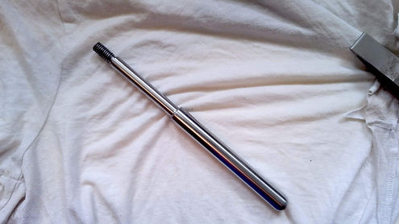
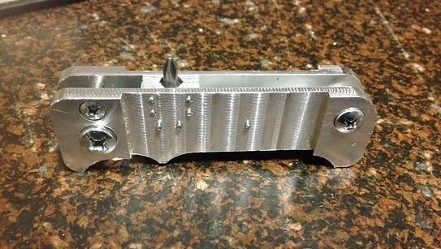
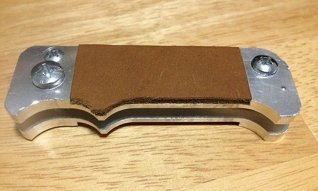
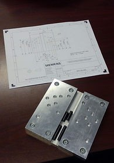

One of my favorite passtimes in college was going down to the machine shop and seeing what I could make from scrap materials. It earned me the title of "shop rat" and occasionally even resulted in something useful. This page has a selection of some of the odd machining projects I did back in college.
-
Machining Projects
Milling something
-
Machinist's Hammer
(2019)To get promoted at my job in the machine shop, I fabricated this hammer from plans on the mill (head) and lathe (handle). The process required practicing many useful-to-know processes, like fly cutting, single point tapping, using angle blocks, and polishing.
- 
Handle with single point thread (Top) and hammer (Bottom)
-
Multi-Tool Handle
(Winter 2017)In High School, I made pocket knives out of sheet metal, wood, and other materials. Once I learned how to use a milling machine, I figured I'd try my hand at making a handle out of aluminum.
- 
- 
The knife handle (Top) the knife handle with leather scales (Bottom)
-
Replacement Tripod Mount
(Winter 2018)This was a fairly simple project. I bought a second hand tripod that was missing the mount that attaches to the camera. I machined a replacement one from aluminum and it works great!
The replacement mount being used to hold a camcorder to a tripod (Left), the mount (UR), and the mount attached to a camcorder (BR)
-
Miter Gauge Angle Set
(Fall 2019)I once saw one of these in a woodworking video. Depending on where you place the dowel pins, it creates different angles that can be accurately transfered to a miter gauge. Not wanting to pay $100 to buy one, I made one up in CAD, scrounged some scrap aluminum, and got to work making my own.
- 
The angle set and projection drawing (Left), CAD model (UR), and a miter gauge for woodworking (BR)
-
Magnetic Belt Buckle
(Fall 2016)A magnetic belt buckle based on the design I created for the foley catheter bag project. It kind of works.
The belt buckle
-
Replacement Oven Dial
(Winter 2020)One day at my college apartment our oven dial fell right off, leaving us with a Shrodinger's oven in an eternally uncertain superposition of on and off. After taking some speedy measurements with my calipers, I ran down to the shop and whipped up this replacement from an off-cut of Delrin. I matched the angle on the front so I could glue on the old label.
The replacement dial